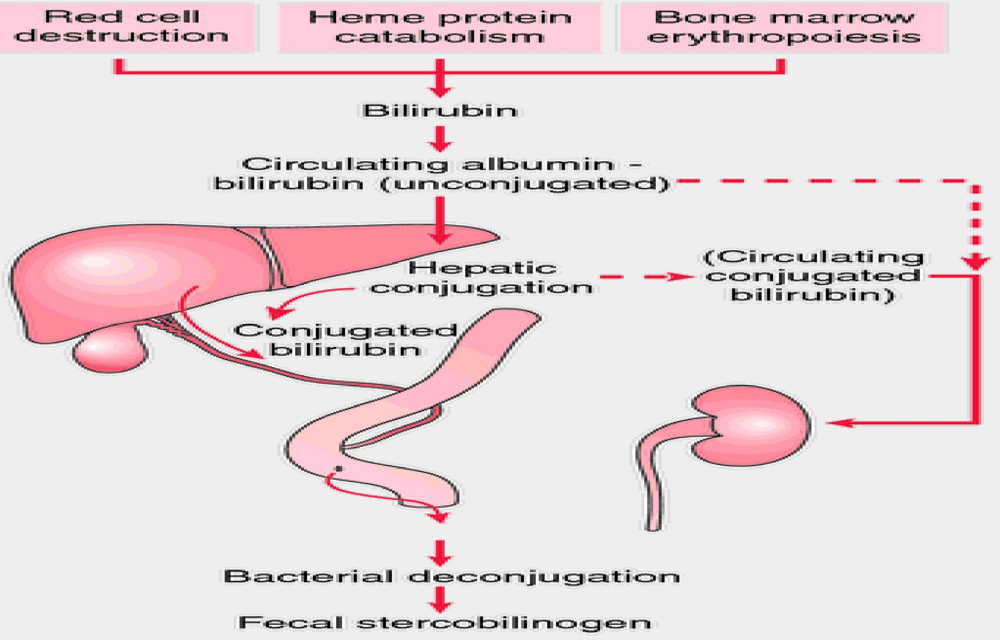

Common Conditions in High-Risk Newborns
1. NEONATAL HYPOGLYCAEMIA
Description
An acquired metabolic disorder characterized by abnormally low blood sugar such that for term babies, glucose levels are below $2.0 \mathrm{mmols} / \mathrm{L}$. the variation of the cut off values is because normal term infant uses compensatory mechanisms and alternative fuels such as ketone bodies, lactate or fatty acids to replace glucose
PREDISPOSING FACTORS (NEONATES AT RISK)
- Low birth weight: This is because these babies have lower glycogen stores hence cannot mobilize enough glucose. Simultaneously, have immature hormonal and enzyme responses and sometimes cannot feed orally at an early stage
- Severely asphyxiated: The low oxygen supply upsets the metabolism of carbohydrates hence excessive catabolism of glycogen, leading to exhaustion of the stores
- Idiopathic respiratory distress: Due to inadequate oxygen supply hence exhaustion of the glycogen stores
- Severe jaundice: toxicity of the high levels of unconjugated bilirubin inhibits feeding hence high use of glucose
- Intracranial injury: due to inadequate oxygen supply
- Severe infection: inhibition of feeding
- Hypothermia: excessive use of glucose to produce heat for survival
- Uncontrolled maternal medical condition: becoz the neonate's pancrease produces large amounts of insulin in the $1^{\text {st }}$ week as it was during intrauterine stage
CLINICAL FEATURES OF N. HYPOGLYCEMIA
- Lethargy & poor feeding- due to inadequate glucose supply to the tissues
- Abnormal respiratory pattern- characterized by episodes of shallow breathing and apnoea which finally leads to cyanosis as condition deteriorates. All this is due to reduced oxygen and glucose supply to the brain cells
- Hypotonicity (limpness) & hypothermia; becoz of insufficient supply of O2 & glucose to the muscles
- Irritability: which ranges from jitteriness( extreme nervousness & anxiety), later twitching- angles of mouth & eyes as well as extremeties and eventually seizures/convulsions. It is brought about by neuroglycopenia (insufficient to reduce glucose supply in the nerve cell)- intracranial haemorrhage
- Coma- it is a life threatening feature characterized by lack of sensation, abnormal heart & lungs function. Occurs due to either delay or omission of appropriate measures. Death occurs within 24 hrs if condition is neglected
DIAGNOSTIC FACTORS
- Hx- of maternal diabetes, either gestational or chronic diabetes.
- Physical examination findings- features of irritability, limpness, lethargy e.t.c
- Lab tests-Abnormal lab results e.g. low blood sugars e.t.c.
SPECIFIC MANAGEMENT- N. HYPOGLYCEMIA
PRINCIPLES OF MANAGEMENT:
- Adequate temperature control- keep the neonate warm
- Encourage early feeding- should be fed within 1 hour after delivery
- Encourage frequent feeding, at least every 3 hourly
- Blood glucose should be checked immediately before the second feed and then 4-6 hrly.
- Observe high standards of hygiene to prevent infections.
- Inform the DR concerning the condition
- Admit the baby in the NBU and manage as follows:
If the Blood glucose less than $1.1 \mathrm{Mmol} / \mathrm{L}$;
- Give a bolus of $2 \mathrm{ml} / \mathrm{kg}$ body weight of $10 \%$ glucose IV slowly over five minutes
- If an IV line cannot be established quickly, give $2 \mathrm{ml} / \mathrm{kg}$ body weight of 10% glucose by Nasogastric tube
- Infuse $10 \%$ glucose at the daily maintenance volume according to the baby's age
- Assess the blood glucose 30 minutes after the bolus of glucose administration &;
- If the blood glucose is less than $1.1 \mathrm{mmol} / \mathrm{L}$, repeat the bolus of glucose (above) and continue the infusion then assess blood glucose again after 30 minutes
- If the blood glucose is between $1.1 \mathrm{mmol} / \mathrm{L}$ and $2.6 \mathrm{mmol} / \mathrm{L}$, continue the infusion and repeat the blood glucose testing every three hours until the blood glucose is $2.6 \mathrm{mmol} / \mathrm{L}$ or more on two consecutive tests
- Allow the baby to breastfeed.
- As the baby's ability to feed improves, slowly decrease (over a three-day period) the volume of IV glucose while increasing the volume of oral feeds.
- Do not discontinue the glucose infusion abruptly
If the Blood glucose is between 1.1-2.6 Mmol/L;
- If the blood glucose is between $1.1 \mathrm{mmol} / \mathrm{L}$ and $2.6 \mathrm{mmol} / \mathrm{L}$, allow the baby to breastfeed and repeat the blood glucose testing every three hours until the blood glucose is $2.6 \mathrm{mmol} / \mathrm{L}$ or more on two consecutive tests
- Once the blood glucose is $2.6 \mathrm{mmol} / \mathrm{L}$ or more for two consecutive tests;
- If the baby cannot breastfeed, give expressed breast milk using an alternative feeding method
Frequency of blood glucose measurements after blood glucose returns to normal
- If the baby is receiving IV fluid for any reason, continue blood glucose testing every 12 hours for as long as the baby requires IV fluid.
- If the blood glucose is less than $2.6 \mathrm{mmol} / \mathrm{L}$ treat as described above
- If the baby no longer requires or is not receiving IV fluid, assess blood glucose every 12 hours for 24 hours (two more tests):
- If the blood glucose remains normal, discontinue testing
PROGNOSIS
- Good: with early diagnosis & immediate + proper mgt
- Poor/fatal or leads to high morbidity rate, where the infant is a light or small for gestational age & proper mgt is delayed, becoz there's already some degree of cerebral damage= death or severe mental retardation and other associated conditions
PREVENTION
- Routine screening of the prenatals in order to identify the risk factors
- Adequate temperature control at birth and thereafter( keep infant warm to prevent hypothermia)
- Early feeding- using milk within $1^{\text {st }} 1$ hour for normal neonates and within 15 minutes of birth for those whose mother is diabetic. The milk has got fat content which spares enough glucose required for the normal cerebral functions hence less chances of brain damage
- Frequent feeding thereafter atleast 3 hourly to maintain glucose concentration in the circulation hence normal body function
- Accurate screening & follow-up of the neonates whose mothers are diabetic during the $1^{\text {st }}$ one week of birth
2. HYPERGLYCAEMIA
- Definition: Hyperglycemia is a serum glucose concentration > 8.3 $\mathrm{mmol} / \mathrm{L}$).
- The most common cause of neonatal hyperglycemia is Iatrogenic.
- Iatrogenic causes usually involve too-rapid IV infusions of dextrose during the first few days of life in very low-birth-weight infants (< 1.5 kg)
- Hyperglycaemia is much less of a clinical problem than hypoglycaemia & mostly occurs in pre-terms & severely growth restricted infants
- Symptoms and signs are those of the underlying disorder;
- Diagnosis is by serum glucose testing.
- Additional laboratory findings may include glycosuria and marked serum hyperosmolarity.
Neonatal jaundice
Jaundice is the yellow discoloration of skin & mucous membranes as a result of raised bilirubin levels(hyperbilirubinemia), occurring in the first 28 days of life.
Classification: Physiological jaundice or Pathological jaundice
Visible form of bilirubinemia on;-
- Adult sclera >2 mg.dl
- Newborn skin >5 mg/dl
Occurs in 60% of term & 80% of preterm neonates
Bilirubin Physiology
Source of production : Ageing, immature or malformed red cells are removed from the circulation & broken down in the reticuloendothelial system (liver, spleen & macrophages). Hemoglobin from these cells is broken down to the by-products of haem, globin & iron
- Heam is converted to biliverdin & then to unconjugated bilirubin
- Globin is broken down into amino acids, which are used by the body to make proteins
- Iron is stored in the body or used for new red cells
- $3 / 4$ of bilirubin comes from hemoglobin catabolism.
- 1 gm of hemoglobin results in the production of 34 mg of bilirubin.
- A normal term new born produces about $6-10 \mathrm{mg} / \mathrm{kg} /$ day
Three stages are involved in the process of bilirubin conjugation; a)Transport, b)Conjugation & c)Excretion
a) Transportation of bilirubin
Unconjugated or fat soluble bilirubin is transported to the liver bound to albumin. If not attached to albumin, this unbound or 'free' bilirubin can be deposited in extravascular fatty & nerve tissues (skin & brain). Skin deposits of unconjugated or fat soluble bilirubin causes jaundice, while brain deposits can cause bilirubin toxicity or kernicterus
Once in the liver, unconjugated bilirubin is detached from albumin, combined with glucose & glucoronic acid & conjugation occurs in the presence of oxygen & the enzyme Uridine diphosphoglucoronyl transferase (UDP-GT). The conjugated bilirubin is now water soluble & available for excretion
c) Excretion
Conjugated bilirubin is excreted via the biliary system into the small intestine where normal bacteria change the conjugated bilirubin into urobilinogen. This is then oxidized into orange colored urobilin. Most is excreted in the feaces, with a small amount excreted in urine
Two main forms of bilirubin are present in the body;
- Unconjugated bilirubin is fat soluble & cannot be excreted easily either in bile or urine. Neonatal jaundice can result from increased levels of this fat soluble bilirubin that cannot be excreted and is instead deposited in fatty tissue
- Conjugated bilirubin has been made water soluble in the liver & can be excreted in feces & urine. Neonatal jaundice can also result from increased levels of this water soluble bilirubin if excretion is prevented, e.g. by an obstruction
Assessment of jaundice
Clinical jaundice first becomes obvious in the face followed by a downward progression as it increases in intensity. Assessment of jaundice should be done in natural light. The finger is pressed on the baby's skin, preferably over a bony part, till it blanches. The underlying skin is noted for yellow color. Confirm bilirubin level by lab
a) Physiological jaundice
- Also known as icterus neonatorum
- Neonatal physiological jaundice occurs when unconjugated (fat soluble) bilirubin is deposited in the skin instead of being taken to the liver for processing into conjugated (water soluble) bilirubin that can be excreted in feces or urine.
- It is a normal transitional state affecting up to 60% of term & 80% of premature babies who have a progressive rise in unconjugated bilirubin level & jaundice on day 3.
- Physiological jaundice never appears before 24 hours of life, usually fades by 1 week of age & bilirubin levels don't exceed $12-13 \mathrm{mg} / \mathrm{dL}$ (200-215 umol/L).
- Lasts 5th to 7th day
- Managed with phototherapy if levels rise significantly >5 mg/dl/day
- In many newborns a temporary discrepancy exists between red cells breakdown and their ability to transport, conjugate & excrete the resulting bilirubin.
- Physiological jaundice results from increased red cell breakdown at a time of newborn immaturity
Why does physiological Jaundice develop?
- Increased bilirubin load (incres RBC brkdwn)
- Decreased trasport of bilirubin to the liver (deficient albumin)
- Defective conjugation (reduced levels of UDP-GT enzyme levels)
- Decreased excretion
- Increased entero-hepatic reabsorption
Characteristic of physiological jaundice
- Appears after 24 hours
- Maximum intensity seen on 4-5th day in term & 7th day in preterm neonates
- Mainly occurs in the skin & eyes
- Baby looks & feeds well
- Serum levels do not exceed $15 \mathrm{mg} / \mathrm{dl}$
- Clinically undetectable after 14 days
- Disappears without any treatment
Management of physiological jaundice.
- No treatment is required but baby should be observed closely for signs of worsening jaundice
- Early frequent breast feeding - breast feeding ensures glucose supply to the liver, increases bowel motility & normal bowel flora.
- Associated with decreased milk intake related to fewer calories consumed by infant before mother's milk is well established
- Mother advised to expose the baby in the sunlight
- Phototherapy
Pathological jaundice
- Pathological jaundice in newborns usually appears within 24 hours of birth.
- Increase of serum bilirubin> $5 \mathrm{mg} / \mathrm{dl} /$ day
- Serum bilirubin $>15 \mathrm{mg} / \mathrm{dl}$
- Clinical jaundice is persistent after 14 days
- Stool clay/ white colored or urine staining clothes
- Direct bilirubin $>2 \mathrm{mg} / \mathrm{dl}$ at any time
causes
Appearing within 24 hours of age
- Hemolytic disease of the newborn; Rh, ABO incompartibilities
- Infections: TORCH, malaria, bacterial
- Enzyme deficiencies - (G6PD deficiency leads to increased hemolysis of RBCs)
Appearing between 24-72 hours of life
- Physiological
- Sepsis neonatorum
- Polycythemia
- Concealed hemorrhage: cephalhematoma, SAH, IVH
- Increased enterohepatic circulation
- Drugs that compete with bilirubin for albumin binding sites e.g. asprin, ampicillin, sulphonamides
diagnosis
- Review the maternal & perinatal hx
- Family hx of jaundice
- Previous siblings with jaundice
- Maternal illness during pregnancy
- Hx of malaria traumatic delivery, delayed cord clamping
- Physical examination
- Laboratory tests
- Total & direct bilirubin
- Blood group & Rh for mother & baby
- Hematocrit
- Direct Coomb's test on infant
- Septic screen
- Liver & thyroid function tests
management
Rationale: reduce level of serum bilirubin & prevent bilirubin CNS toxicity
- Keep baby warm
- Continue breastfeeding or give EBM
- Administer antibiotics when indicated
- Prevention of hyperbilirubinemia: Early feeding, Adequate hydration
- Reduction of bilirubin: Phototherapy, Exchange transfusion, Natural light (leads to hyperthermia commonly)
phototherapy
- Is the primary treatment for unconjugated hyperbilirubinemia
- This involves exposure of the naked baby to blue, cool white or green light of wavelength $450-460 \mathrm{~nm}$.
- The light waves convert the bilirubin to water soluble nontoxic forms which are then easily excreted.
- Reduces the risk of bilirubin-induced neurotoxicity, because watersoluble photoisomers do not cross the BBB
(Insoluble) Light (Soluble
phototherapy procedure
- Place baby naked in an incubator/ cot
- External genitalia may be covered while giving phototherapy
- Fix eye shields
- The energy delivered to the infant's skin decreases with increasing distance between the infant & the light source.
- Baby placed at 45 cm from light
- 3 hourly feeding must be continued
- Turn baby 2 hourly or after every feed
- Monitor temp 2-4 hourly
- Weigh the baby on alternate days
- Monitor serum bilirubin daily
- Discontinue phototherapy if the serum bilirubin values are <10 mg/d
Side effects of phototherapy
- Hyperthermia
- Increased fluid loss
- Dehydration
- Damage to the retina by the high light intensity
- Lethargy or irritability
- Loose stools
- Skin rashes/ skin burns
- Increased insensible water loss: provide more frequent extra breast feeding
- Isolation & lack of usual sensory experiences, including visual deprivation
- A decrease in calcium levels leading to hypocalcemia
Care during phototherapy
- Monitor baby's temperature - observe for hypothermia/ hyperthermia
- Eyes - shields or patches must cover the eyes without occluding the nose, & not be too tight or cause eye discharge or weeping
- Skin - cleaned with warm water & observed for rashes, dryness & excoriation
- Position under phototherapy to expose all body surface areas to the light
- Weigh the infant daily
- Monitor fluid administration, urine output
- Hydration - fluid intake & output are monitored & feeding is continued. Consider IVF for ill or dehydrated babies
- Neurobehavioral states - need for interaction with nurse, parents & other caregivers
- Monitor calcium levels - symptoms for hypocalcemia include; jitteriness, irritability, rash, loose stools, fever, dehydration & convulsions (common in preterm babies)
- Parent support
Exchange transfusion
Indications:
- If intensive phototherapy has failed to reduce bilirubin levels to a safe range
- The infant has signs of kernicterus (lethargy, decreased feeding, hypotonia, a high-pitched cry, opisthotonous, setting sun sign, fever, seizures)
- Signs of congestive cardiac failure
Complications of jaundice
- Kernicterus - bilirubin brain damage. Identified by;
- lethargy & poor feeding
- poor or absent moro reflex
- Opisthotonous
- convulsions
ABO and Rhesus Incompatibility
ABO incompatibility
- ABO Incompatibility can occur if the mother and the baby have different blood types.
- when the mother has type O blood and the baby has type A, B, or AB blood.
- People with type O blood produce anti-A and anti-B antibodies.
- Individuals with type O blood develop antibodies throughout life from exposure to nutrition, diet, some infections & transfusions
- The anti-A and anti-B antibodies formed are igG antibodies
- igG can cross the placenta and attach to fetal red cells and destroy them
- When a type O blood mom is pregnant with a type A, B, or AB blood baby, there is a chance that the anti-A or anti-B antibodies will pass through the placenta during pregnancy or birth and cause ABO Incompatibility.
- Like the antibodies produced in Rh Disease, the antibodies with ABO incompatibility attack the baby's red blood cells once they pass through the placenta.
- These antibodies can cause the rapid breakdown of the baby's red blood cells.
- Bilirubin is produced when the body breaks down red blood cells and this rapid breakdown of the baby's red blood cells causes a quick build up of bilirubin, resulting in jaundice and sometimes anemia.
- Diagnosis is done by direct coombs test to identify maternal antibodies on foetal RBCs
- ABO usually causes mild haemolysis
- Management depends on the degree of jaundice
Rhesus Isoimmunisation
Also called RhD incompatibility. The D antigen is found on RBCs. RBCs with antigen D are rhesus positive, while RBCs without antigen D are rhesus negative.
Rhesus disease occur when a woman with Rh-negative blood is pregnant with Rh positive fetus. It does not affect a first pregnancy. The mother must have exposure to Rh-positive fetal cells in a previous pregnancy, then she develops antibodies against the rhesus antigen. The ig G antibodies can cross from the mother to the fetus through the plcenta
Events that facilitate rhesus disease
- Miscarriage
- Termination of pregnancy (abortion)
- APH
- Invasive prenatal testing e.g. amniocentesis , cordocentesis,chorionic villus sampling,fetal blood sampling
- delivery
- Ectopic pregnancy
- External cephalic version
- Fetal death in utero or stillbirth
- Abdominal trauma
Prevention of Rhesus disease
- Screening women for the rhesus factor and antibodies
- Administration of anti-D immunoglobulins to non-sensitized women within 72 hours of birth or any other sensitizing event
- Anti-D ig destroys any fetal cells in the mothers blood before her immune system produces antibodies
- Where feasible, administration of anti-D at 28 & 34 weeks gestation is recommended
Effects of Rh D isoimmunization
- Destruction of fetal RBCs (hemolytic anemia)
- Oedema
- Congestive Cardiac failure
- Jaundice with kernicterus
- Haemorrhagic disease of the newborn
- Hydrops fetalis due to excessive haemolysis
Management of RhD isoimmunization
- Exchange blood transfusion
- Phototherapy to reduce bilirubin levels
EFFECTS OF MATERNAL DRUG ABUSE/USE DURING PREGNANCY ON THE NEWBORN
DESCRIPTION:
The incidence of drug use within the population has a large geographical variation. As a result, the incidence of drug withdrawal symptoms among neonates & infants also has a high incidence. Opiates & other drugs cross the placenta & the fetus during pregnancy is likely to be exposed to the same peaks & troughs of drug exposure that the mother is. Withdrawal may be manifested b4 birth
Infants born to mothers who have used illicit drugs during pregnancy are at risk of withdrawal symptoms. The common substances abused by pregnant women are CNS depressants (alcohol, sedatives), Stimulants (cocaine, amphetamines), Opiates & narcotics, and Hallucinogens.
The effects of substance abuse during pregnancy may be classified into three categories:
- Effects of the illicit substance(s) on the mother
- Effects on the course of pregnancy and delivery
- Effects on the fetus, newborn, and developing child
Neonatal effects of substance abuse:
NB// These depend on the specific substance abused by the mother but generally include:
- congenital anomalies
- neonatal medical complications such as sudden infant death syndrome (SIDS), neonatal abstinence syndrome (NAS), and respiratory distress syndrome.
- Neurobehavioral changes
What is neonatal abstinence syndrome (NAS)?
Refers to a group of problems that occur in a newborn who was exposed to addictive opiate & narcotic drugs in utero. These substances cross the placenta barrier and the fetus becomes addicted along with the mother. This disorder may be associated with long term problems to the baby.
CLINICAL FEATURES OF NEONATAL DRUG WITHDRAWAL
These symptoms usually begin 1-3 days after birth but may take up to a week to appear. The withdrawal symptoms most frequently seen in neonates are:
- Jitteriness/ restlessness
- Tremor & Irritability
- Constant/persistent high pitched crying
- Infants often fail to settle btwn feeds (disorganized sucking)
- Hyperactivity
- Frequent yawning (irrespective of adequate periods of feeding), sneezing & vomiting
- Sweating, pyrexia (may also be in the absence of an infection) & convulsions
- Respiratory distress
- Diarrhoea & an irritant nappy rash
- Episodes of high temp in the absence of an infection
SPECIFIC MGT OF NEONATAL ABSTINENCE SYNDROME:
Divided into general care given to these infants & pharmacological rx
- Keep the infant with the mother to enhance bonding
- Encourage breastfeeding as long as there's no evidence of HIV or ongoing drug use by the mother esp. cocaine and heroine
- A quiet envt with reduced light and noise is helpful in keeping stimuli to a minimum
- Feeds should be given frequently
- Build up a good working relationship with the mother
- Communication should be clear and non judgmental
- Explain the baby's presenting signs and emphasize that the behavior is not a rejection of their parents
- Encourage parents to take active part in the care of their baby
- Emphasize the possible effects of breast feeding, which would be harmful especially with cocaine and heroine.